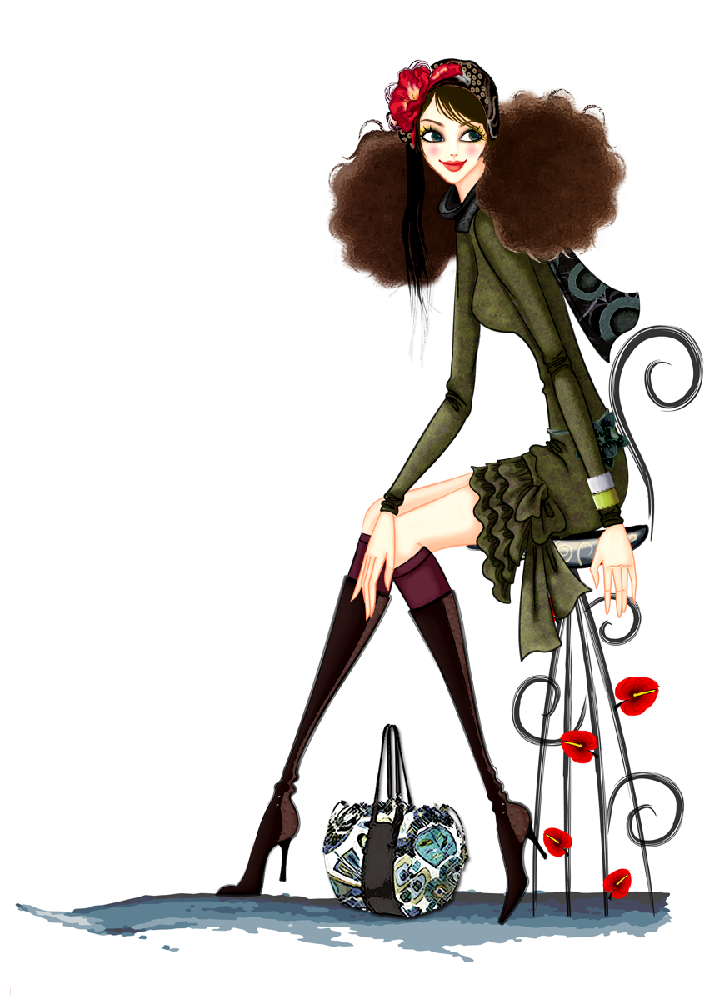

Home:
What would the beauty world be without the best beauty blogs? On the weekend (or whenever—who are we kidding?), we love nothing more than checking out what our favorite influencers are posting, from the products they're raving about or the makeup tutorials they're loving. While makeup and skincare blogs launch all the time, we continue to go back to certain experts over and over again, whether that's because they've been pillars of the beauty community for a long time or their expert knowledge is simply unrivaled.
Women Beauty Hacks:
"I hope that my presence on your screens and in the magazines may lead you, young girl, on a similar journey. That you will feel the validation of your external beauty but also get to the deeper business of being beautiful inside. There is no shade in that beauty.”
Edith Head - costume designer with the most Oscar award for Best Costume
Fashion playing a major role in every individual life, fashion is a big topic for human being. Everyone is doing fashion in modern India. Naturally, it is related to dress and manners. But away implies something deeper than fashion most of the people doing the fashion, but with fashion, the manners also important to make the stability of their modernity.
Fashion is the style of living in life. Here, every people want to do fashion, But in the old days, there was not so much fashion. From the Paris efforts, India brings the new fashion in dress.

Creativity with old plazoes:
Palazzo trousers are popular as a summer season style, as they are loose and tend to be flattering in light, flowing fabrics that are breathable in hot weather.Palazzo pants flare out evenly from the waist to the ankle, and are therefore different from bellbottoms, which are snug until they flare out from the knee.
Plazoes are very important part of fashion culture as well as traditional culture. Let's try out some amazing hacks of clothing with old plazzoes .
Creativity with old shirts or T-shirt:
A shirt is a cloth garment for the upper body (from the neck to the waist).
Originally an undergarment worn exclusively by men, it has become, in American English, a catch-all term for a broad variety of upper-body garments and undergarments. In British English, a shirt is more specifically a garment with a collar, sleeves with cuffs, and a full vertical opening with buttons or snaps (North Americans would call that a "dress shirt", a specific type of collared shirt). A shirt can also be worn with a necktie under the shirt collar.
Shirts and Tshirts are very important part of fashion culture for both men and womens. Let's try out some amazing hacks of clothing with old shirts and T-shirts .
Creativity with old Sweaters:
A sweater, also called a jumper in British English,is a piece of clothing, typically with long sleeves, made of knitted or crocheted material, that covers the upper part of the body. When sleeveless, the garment is often called a slipover or sweater vest.
Sweaters are not only protects from cold but also very important part of fashion culture for both men and womens. Let's try out some amazing hacks of clothing with old sweaters.
Creativity with old Jeans:
Jeans are a type of pants or trousers, typically made from denim or dungaree cloth. Often the term "jeans" refers to a particular style of trousers, called "blue jeans", which were invented by Jacob W. Davis in partnership with Levi Strauss & Co.
Jeans are not only a important part of officials but also also a part of fashion world . Let's try out some amazing hacks of clothing with old sweaters.
Creativity with old Saree:
The Saree, after having survived thousands of years of modifications, invasions, migration, and globalization has now emerged as highly appreciated, glamorous and sensuous outfit which is festooned by beautiful women all over the world. Saree is truly the most versatile garment worn. A saree can be worn in hundreds of styles and drapes; it can be paired along with different kinds of blouse and also can be accessorized with numbers of accessories in various ways. A saree is appropriate for almost every occasion or an event, whether it’s for daily use, office wear, birthday party, festive occasion, wedding or a romantic dinner.
Sarees are not only important part of indian culture but also also a part of fashion world . Let's try out some amazing hacks of clothing with sarees.
Creativity with jumpsuits:
A jumpsuit is a one-piece garment with sleeves and legs and typically without integral coverings for feet, hands or head. The original jump suit is the functional one-piece garment used by parachuters.
Inmate in bright yellow institutional jumpsuit
The original skydivers' jumpsuits were simple garments designed to insulate the body from the colder temperature that's associated with higher altitudes and minimize the risk of covering important handles and grips.
Jumpsuits are not only important part of western culture but also also a part of fashion world . Let's try out some amazing hacks of clothing with jumpsuits.
Men Hacks:
"I hope that my presence on your screens and in the magazines may lead you, young girl, on a similar journey. That you will feel the validation of your external beauty but also get to the deeper business of being beautiful inside. There is no shade in that beauty.”
Edith Head - costume designer with the most Oscar award for Best Costume
men’s clothing would eventually evolve into what it is today. Dragging and slashing was another one of the Renaissance era’s decorative techniques that was used to distinguish and beautify men’s garments (levanter). But as seen in today’s fashion Calvin Kline is a major designer. He created a classic man’s silhouette which was made by using more interesting fabric’s and unique details (Billet 3). Kline has become one of the most common designers worn today.

Creativity with Pants:
Trousers or Pants are a tricky beast in fashion.
Often misunderstood, plagued by an overabundance of terms and names, and surprisingly difficult to find in a comfortable fit.
However, pants bring everything together even when they aren’t the star of the show.
Understanding the role of your trousers and the options you have in choosing them are the keys to comfortable, sharp-looking clothes for your lower half.
Lets try out some amazing hacks of pants in our daily life.
Creativity with Jeans:
Jeans are a type of pants or trousers, typically made from denim or dungaree cloth. Often the term "jeans" refers to a particular style of trousers, called "blue jeans", which were invented by Jacob W. Davis in partnership with Levi Strauss & Co. in 1871 and patented by Jacob W. Davis and Levi Strauss on May 20, 1873. Prior to the Levi Strauss patented trousers, the term "blue jeans" had been long in use for various garments (including trousers, overalls, and coats), constructed from blue-colored denim.
Lets try out some amazing hacks of jeans in our daily life.
Creativity with Shirts:
A shirt is a cloth garment for the upper body (from the neck to the waist). Originally an undergarment worn exclusively by men, it has become, in American English, a catch-all term for a broad variety of upper-body garments and undergarments. In British English, a shirt is more specifically a garment with a collar, sleeves with cuffs, and a full vertical opening with buttons or snaps (North Americans would call that a "dress shirt", a specific type of collared shirt). A shirt can also be worn with a necktie under the shirt collar.
Lets try out some amazing hacks of shirts in our daily life.
Creativity with Jackets:
A jacket is a garment for the upper body, usually extending below the hips.A jacket typically has sleeves, and fastens in the front or slightly on the side. A jacket is generally lighter, tighter-fitting, and less insulating than a coat, which is outerwear. Some jackets are fashionable, while others serve as protective clothing. Jackets without sleeves are vests.
Lets try out some amazing hacks of Jackets in our daily life.
Creativity with T-shirt:
A T-shirt, or tee shirt, is a style of fabric shirt named after the T shape of its body and sleeves. Traditionally, it has short sleeves and a round neckline, known as a crew neck, which lacks a collar. T-shirts are generally made of a stretchy, light and inexpensive fabric and are easy to clean.
Lets try out some amazing hacks of Jackets in our daily life.